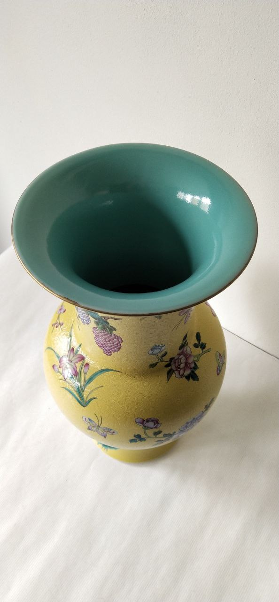
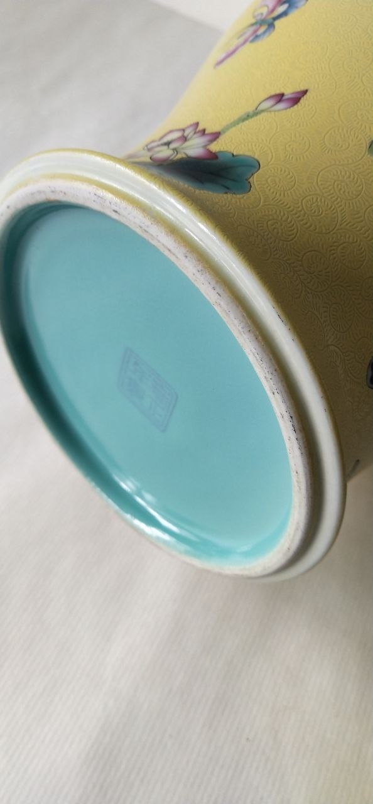
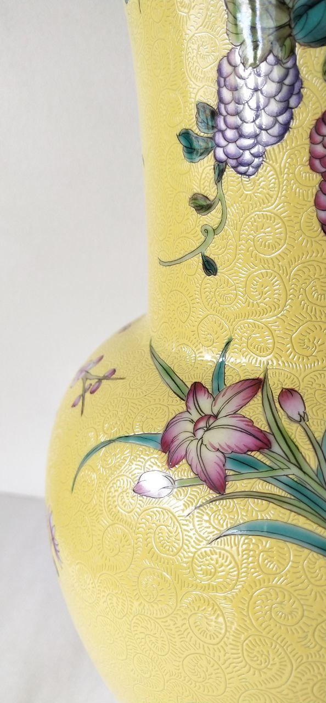
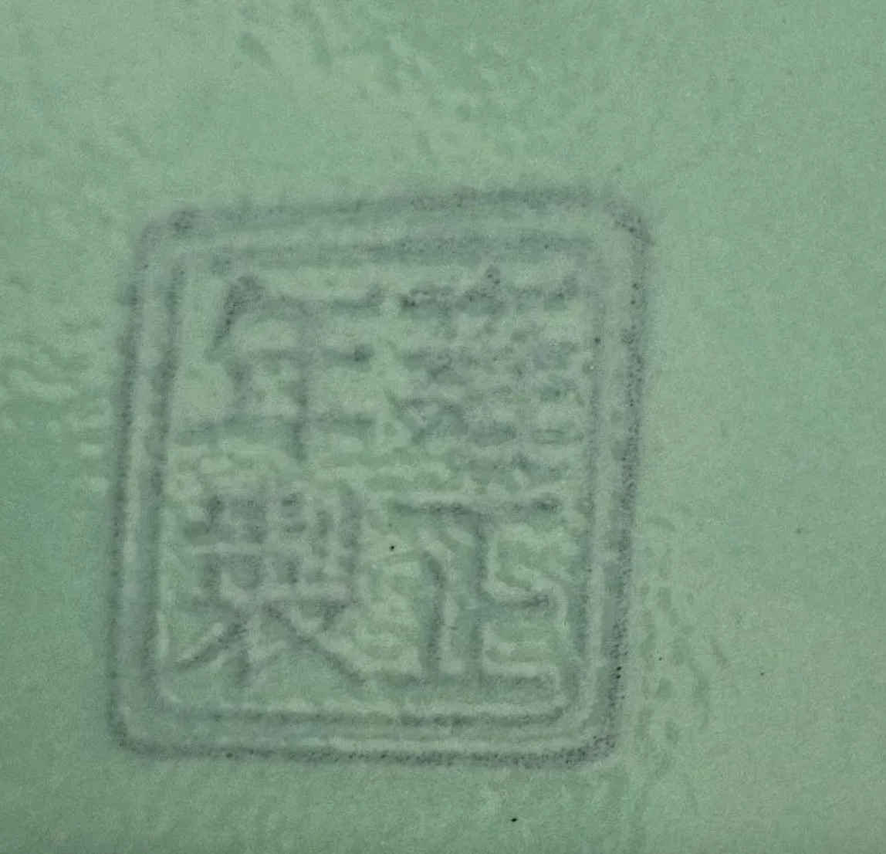
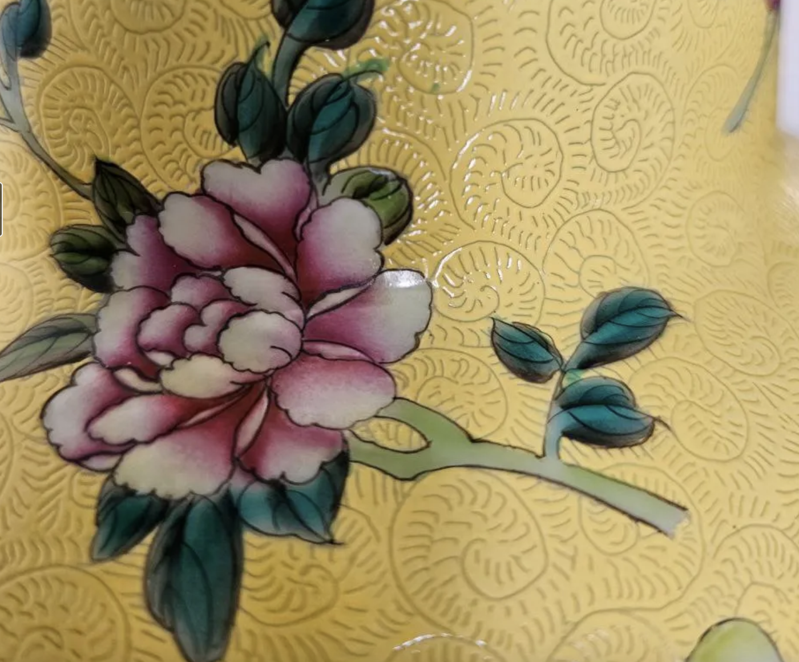

Object Description
The vase is of yan yan ("swelling beauty") form: a bulbous globular body tapering to a tall cylindrical neck that opens abruptly into a widely flared trumpet mouth, set on a low ring foot. A narrow gilded line runs along the rim, consistent with gilt-rim decoration documented on Yongzheng-period pieces. The overall silhouette corresponds closely to Palace Museum, Beijing examples of Yongzheng and early Qianlong yan yan vases.
The exterior ground is a saturated lemon-yellow enamel over which continuous incised spiral-and-foliate scrollwork is visible beneath the surface — a sgraffito pattern pressed into the biscuit before the yellow enamel and overglaze colours were applied. Overglaze polychrome decoration in the famille rose palette includes peonies (牡丹) in pink-and-white shading, orchids and wild flowers in lavender and magenta, grape-like fruit clusters in deep purple, lotus blooms, and butterflies in teal, yellow and rose.
The interior of the flared mouth and the entire base are covered in a uniform turquoise (copper-oxide) enamel glaze — a combination of yellow exterior with turquoise interior/base that is a well-documented hallmark of Yongzheng and Qianlong imperial production. The base carries a four-character seal mark in blue overglaze enamel within a double rectangular cartouche, read as 雍正年製 (Yongzheng nian zhi — "Made in the Yongzheng reign").



Sgraffito Ground and Enamel Technology
Under magnification the yellow ground reveals continuous sgraffito scrollwork — spiral and foliate patterns mechanically incised into the unfired biscuit before the coloured enamels were applied. This technique, characteristic of Yongzheng and Qianlong imperial wares, is a key point of difference from later imitations, where equivalent surface texture is typically painted rather than physically incised into the body.
The lemon-yellow ground itself corresponds compositionally, on published reference analyses of comparable imperial wares, to a lead-tin-antimony pyrochlore ("Naples yellow") system. The overglaze palette — arsenate-based whites and pinks, copper-based greens, cobalt-based blues — is consistent with the yangcai (foreign-colour) enamels associated with the Yongzheng workshop under the direction of Nian Xiyao at Jingdezhen.
The turquoise interior and base glaze is a copper-oxide-based enamel applied as a separate, uniform coating distinct from the exterior yellow ground — a configuration documented on comparable Yongzheng-period vessels and revived, with variation, on later Daoguang-period wares produced in the Yongzheng idiom.
Reign Mark
The four characters 雍正年製 are arranged in a 2×2 grid within a double rectangular frame, executed in blue overglaze enamel on the turquoise base ground. The rectangular (as opposed to circular) cartouche and the four-character — rather than six-character Da Qing Yongzheng nian zhi 大清雍正年製 — format are both attested on genuine Yongzheng imperial pieces, particularly coloured-ground wares where cartouche space is constrained.


Microscopic Diagnostic Features
Under low-power magnification (macro photography, Fig. 4 and Fig. 6), the sgraffito ground shows continuous, evenly spaced incised channels running beneath the enamel surface, with the glaze pooling faintly along the incised troughs — consistent with mechanical incision of the biscuit prior to enamelling rather than a painted or textured simulation of the pattern. On genuine mechanically-incised grounds, this pooling produces a subtle line of enamel thickening along each channel; on painted imitations the enamel layer instead remains of uniform thickness across the decorated ground.
At the seal mark, the boundary between the turquoise base glaze and the blue mark enamel appears clean and consistent with a single firing cycle, without visible evidence of re-firing, overpainting, or later retouching. The enamel layer over the mark shows even thickness and no localised abrasion or pigment loss inconsistent with the wear pattern of the surrounding glaze.
These are macro-photographic observations only; confirmation of mechanical (versus painted) incision, and of firing sequence at the mark, would require examination under a binocular optical or polarising microscope at ×10–40 magnification, which has not yet been performed on this object.
Interpretation
Diagnostic Checklist
- ✓ Vase form — yan yan (swelling beauty): globular body, flared trumpet mouth, ring foot; canonical Yongzheng-period silhouette.
- ✓ Yellow ground — saturated lemon-yellow enamel, visually consistent with Pb-Sn-Sb pyrochlore (Naples yellow) grounds of the Yongzheng palette.
- ✓ Sgraffito — continuous incised spiral scrollwork beneath the yellow enamel, appearing mechanically incised rather than painted.
- ✓ Overglaze palette — pink-white peonies, teal greens, cobalt blue in a yangcai-type polychrome scheme.
- ✓ Interior glaze — uniform turquoise (copper-oxide) enamel, matching the documented Yongzheng/Qianlong interior treatment.
- ✓ Base glaze — turquoise enamel on the base, matching published comparanda for the type.
- ✓ Reign mark — four-character 雍正年製 in blue overglaze enamel within a double rectangular cartouche.
- ✓ Gilded rim — narrow gilt line at the mouth rim.
- ✓ Porcelain body — white, dense biscuit visible at the unglazed footrim margin.
Comparative Attribution: Yongzheng vs. Daoguang
Yellow-ground famille rose wares with turquoise interiors and sgraffito grounds were produced across more than one Qing reign. The Daoguang period (1821–1850) revived the Yongzheng aesthetic closely, including apocryphal Yongzheng marks on genuinely Daoguang-period pieces. The table below summarises the principal points of comparison used in assessing this vase.
| Criterion | Yongzheng-period expectation | Later (e.g. Daoguang) revival expectation |
|---|---|---|
| Yellow ground texture | Clean, saturated, glassy lemon-yellow | Often described as having a softer, "muslin-like" texture |
| Sgraffito | Mechanically incised, sharp-walled channels | May be present but sometimes shallower or partly simulated by painting |
| Cobalt in mark | Manganese-rich cobalt (per published Palace Museum reference data) | Different trace-element profile depending on cobalt source and period |
| Mark format | Four- or six-character seal or regular script, rectangular cartouche common | Often genuine Daoguang mark, sometimes paired with apocryphal earlier reign mark |
The present vase's ground colour reads as clean and saturated rather than muslin-textured, and the sgraffito appears mechanically incised throughout (Figs. 4, 6) — both observations lean toward a Yongzheng attribution over a Daoguang revival, though the surface-level distinction here is not chemically confirmed. XRF profiling of the Sb:Sn ratio in the yellow pigment and of the Mn:Co:As ratio in the mark's cobalt would be required to resolve the question with confidence.
Conclusion
This vase presents the full combination of features conventionally associated with Qing imperial famille rose wares of the Yongzheng or early Qianlong period: a lemon-yellow enamel ground; mechanically incised sgraffito scrollwork; an overglaze yangcai polychrome palette; a turquoise-enamelled interior and base; a gilded rim; and a four-character 雍正年製 seal mark in blue overglaze enamel on the turquoise base.
On visual and stylistic grounds, this convergence of features constitutes a reasonable prima facie case for attribution to the Jingdezhen imperial kilns, most probably of the Yongzheng (1723–1735) period or, alternatively, an early Qianlong (1736–1795) continuation of the same workshop tradition. This attribution should be regarded as provisional: none of the individual features is exclusive to the Yongzheng reign, and the same combination is known to recur, with variation, on high-quality Daoguang-period revival wares. Confirmation would require in-situ portable XRF profiling of the cobalt mark and the yellow ground pigment, optical microscopy at ×10–40 magnification of the sgraffito incisions, and thermoluminescence dating of the porcelain body.